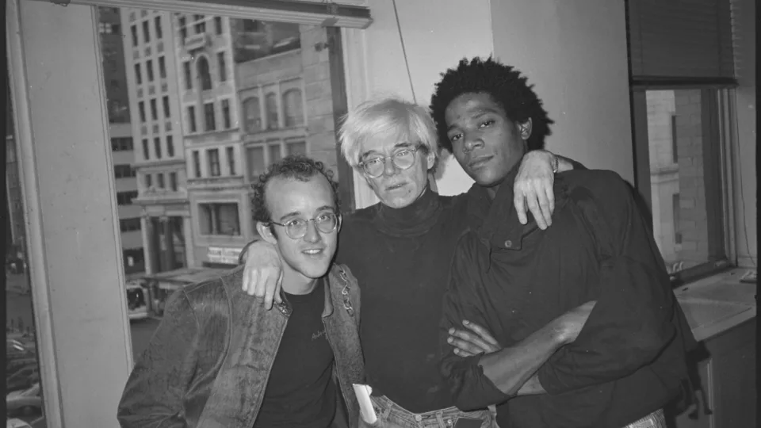
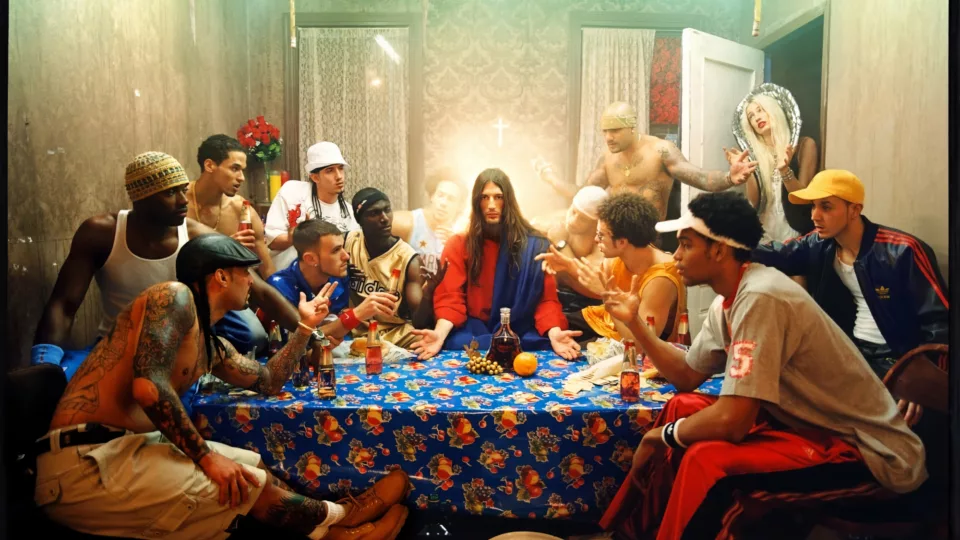
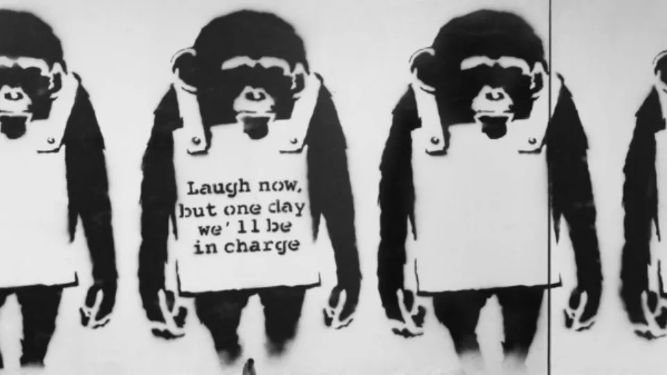
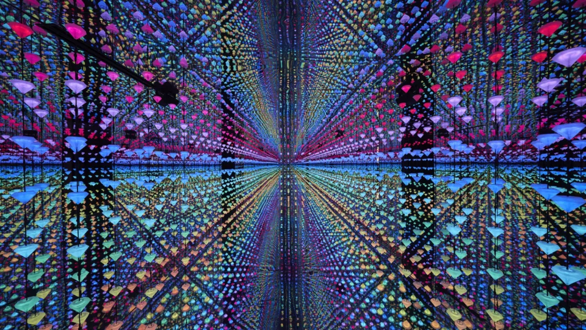
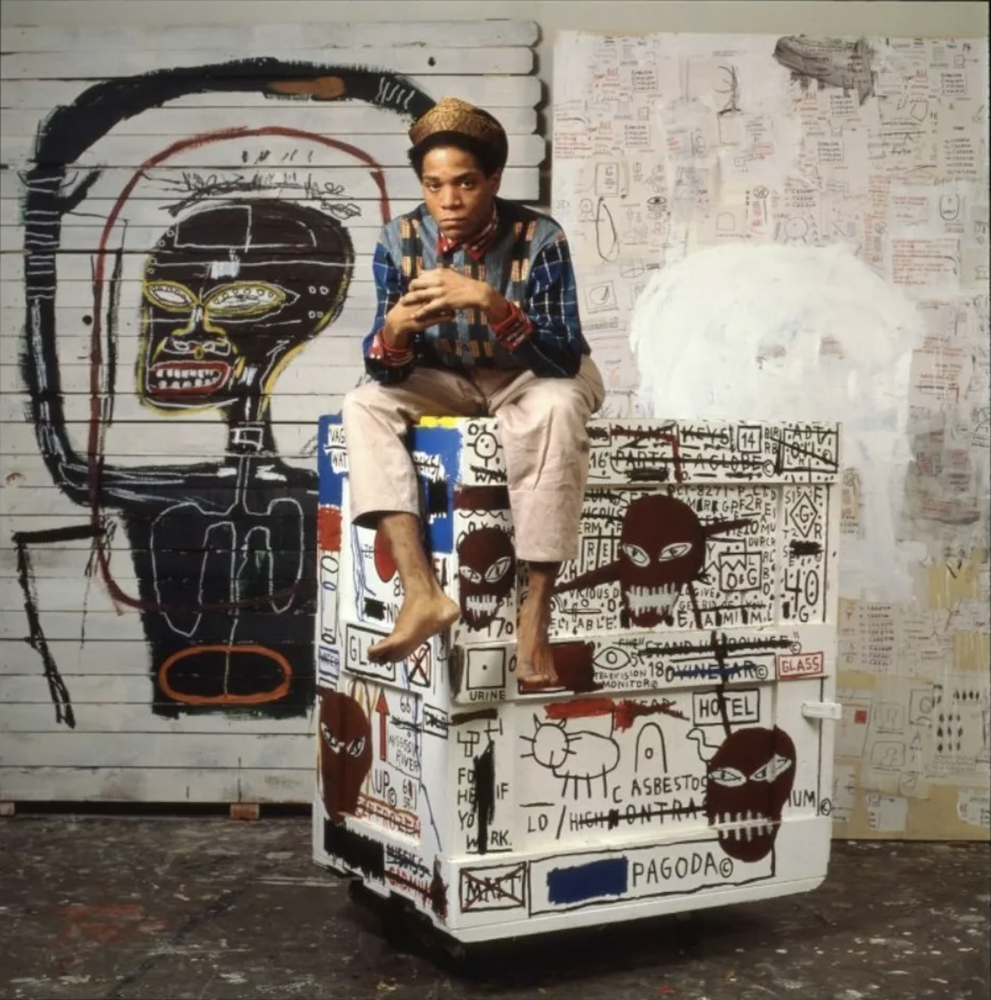

- 
- 
- 
-

- 
Modern masters
The Modern Masters have inspired countless generations and united art lovers around the world. Each master is celebrated for having a unique vision. They seize their moment in time to reflect and envision the future. Daring to change our world, they create work that becomes timeless.
With global impact, Moco Modern Masters have found their way into homes and museums worldwide – shaping our collective consciousness. Their names, art, and ideas are deeply woven in the fabric of our everyday lives. Andy Warhol, Jean-Michel Basquiat, Keith Haring, Yayoi Kusama – All Icons.
Andy Warhol
After Andy Warhol’s arrival on the New York scene in 1949, he became obsessed with consumerism, the cult of celebrity, commodity, and pop culture – themes that led to the birth of Pop Art.
The King of Pop Art knew that money made the world go ‘round, and not only did he flirt with this idea, but he made passionate love to it! Although Andy Warhol came from a working-class family, he built an entire artistic career around commercial obsession. Moco Museum Barcelona welcomes the Pop Art Master for his lasting impact on culture and our world.
“I wonder if it’s possible to have a love affair that lasts forever.” – Andy Warhol
Pop. Graffiti. Pop-graffiti.
Jean-Michel Basquiat
Moco Modern Master
Jean-Michel Basquiat
Piano Lessons (detail)